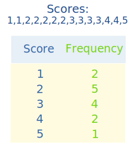

Frequency Distribution
Frequency
Frequency is how often something occurs.

Example: Sam played football on:
- Saturday Morning,
- Saturday Afternoon
- Thursday Afternoon
The frequency was 2 on Saturday, 1 on Thursday and 3 for the whole week.
Frequency Distribution
By counting frequencies we can make a Frequency Distribution table.
Example: Goals
Sam's team has scored the following numbers of goals in recent games
2, 3, 1, 2, 1, 3, 2, 3, 4, 5, 4, 2, 2, 3
Sam put the numbers in order, then added up:

- how often 1 occurs (2 times),
- how often 2 occurs (5 times),
- etc,
and wrote them down as a Frequency Distribution table.
From the table we can see interesting things such as
- getting 2 goals happens most often
- only once did they get 5 goals
This is the definition:
Frequency Distribution: values and their frequency (how often each value occurs).
Here is another example:
Example: Newspapers
These are the numbers of newspapers sold at a local shop over the last 10 days:
22, 20, 18, 23, 20, 25, 22, 20, 18, 20
Let us count how many of each number there is:
| Papers Sold | Frequency |
|---|---|
| 18 | 2 |
| 19 | 0 |
| 20 | 4 |
| 21 | 0 |
| 22 | 2 |
| 23 | 1 |
| 24 | 0 |
| 25 | 1 |
It is also possible to group the values. Here they are grouped in 5s:
| Papers Sold | Frequency |
|---|---|
| 15-19 | 2 |
| 20-24 | 7 |
| 25-29 | 1 |
(Learn more about Grouped Frequency Distributions)
Graphs
After creating a Frequency Distribution table you might like to make a Bar Graph or a Pie Chart using the Data Graphs (Bar, Line and Pie) page.